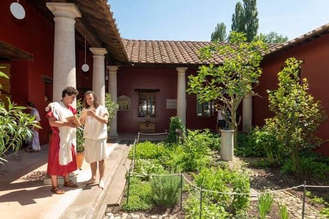

Buttons
Button-Navigation
Filter
8 Angebote
Tags


Suchfeld
Tabs
Für FamilienSpielerisch die Römerzeit entdecken: Tierpark, Römerhaus und Workshops für Kinder ab 6 Jahren.
Für SchulenLehrplanbezogene Workshops und Führungen für alle Stufen, mit Unterlagen zur Vor- und Nachbereitung.
Für GruppenPrivate Führungen für Vereine und Firmen, auf Wunsch mit römischem Apéro.
Breadcrumbs
Dropdown
- Einzelticket
- Familienticket
- Gruppenticket
- Jahresabo
- Einzelticket
- Familienticket
- Gruppenticket
- Jahresabo
Sprachwahl
In-Text-Link
Das Römerhaus zeigt, wie eine wohlhabende Familie vor rund 1800 Jahren lebte. Gleich daneben liegt das Museum Augusta Raurica mit dem Silberschatz.
Planen Sie Ihren Besuch mit unserem Tagesprogramm.
Stepper
- Ticket
- Kontaktdaten
- Bezahlung